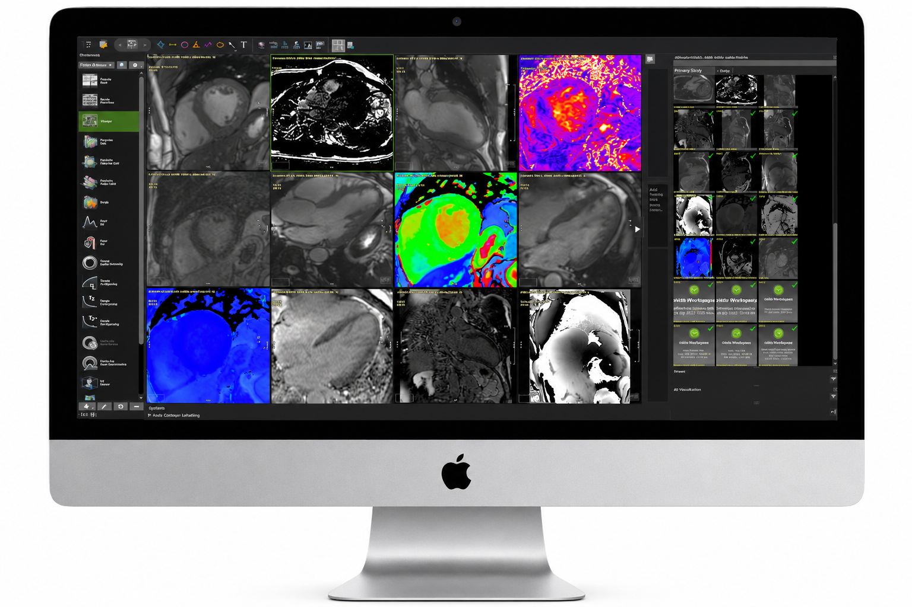

Delivering high-quality imaging analysis, quantitative assessment, study oversight, and expert adjudication for multicentre clinical trials and translational research.
The Stephenson Cardiac Imaging Centre Core Lab provides centralized image analysis, blinded review, imaging endpoint assessment, and quantitative reporting for clinical studies, investigator-initiated research, and industry-sponsored trials.

Quality, security, and regulatory compliance are central to every study we support. Our Core Lab follows information security practices aligned with ISO 27001 principles and conducts clinical research activities in accordance with ICH-GCP guidelines. Through robust quality management procedures, we maintain high standards for data integrity, patient confidentiality, and operational consistency. All imaging data undergo secure DICOM de-identification using processes designed to comply with the Alberta Health Information Act (HIA), PIPEDA, and HIPAA privacy requirements, ensuring the responsible management of sensitive research data throughout the study lifecycle.
Protocol design and site onboarding.
Secure centralized data collection.
Expert blinded image interpretation.
Quantitative endpoints and final datasets.
Our team can help design imaging endpoints, standardize acquisition protocols, and provide independent quantitative analysis for single-centre and multicentre studies.
Contact the Core Lab